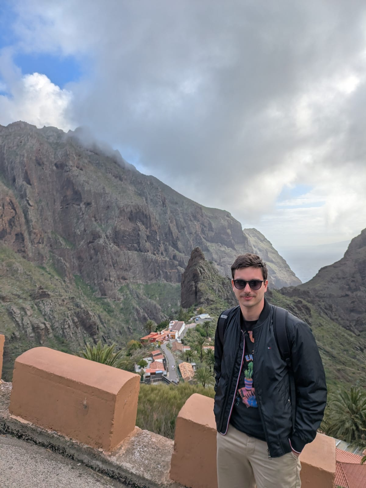

I recently graduated in Electronics and Computer Engineering from FESB in Split. I am currently looking for a junior engineering position where I can learn, grow and work on real technical projects.
Download CV
FPGA-based Tetris implementation using Verilog.
Email: rinonazlic@gmail.com
GitHub: github.com/rino191
LinkedIn: Rino Nazlić